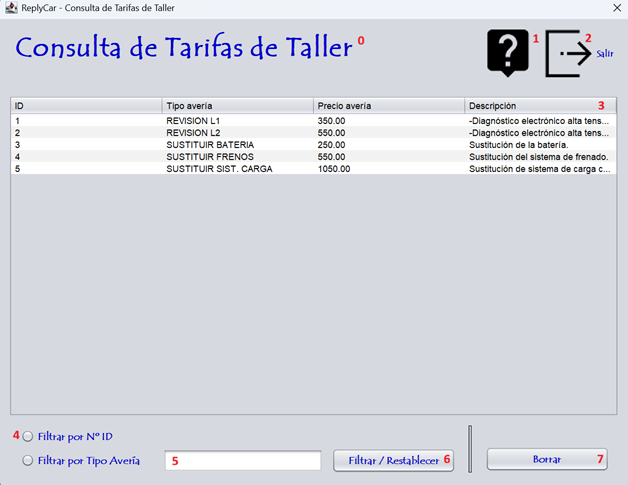

La consulta de una tarifa consiste en la consulta de la ficha con sus datos para poder ralizar las facturas y el seguimiento de las intervenciones. Sigue las instrucciones de la fotografía para realizar el proceso correctamente. Para realizar la consulta de una tarifa debe ingresar los datos que corresponden a la numeración expuesta en la fotografía. Vamos a proceder:

0 - Título de la pantalla, descripción de lo que significa la pantalla.
1 - Botón para proceder a leer la ayuda de la aplicación.
2 - Botón para salir de la aplicación.
3 - Listado de las tarifas que tenemos en la base de datos.
4 - Botones de radio para filtrar la búsqueda.
5 - Ingresar el texto que quieres buscar.
6 - Botón para filtrar y restablecer la búsqueda.
6 - Botón para borrar la tarifa.
Nota: Pulsando F1 en la ventana principal, se abrirá esta página de ayuda.